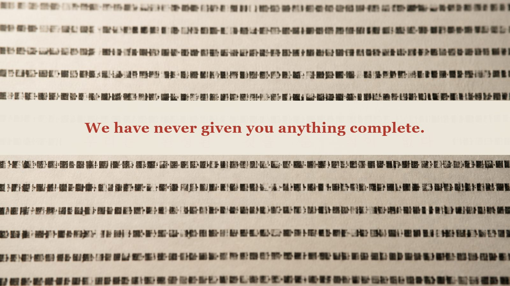
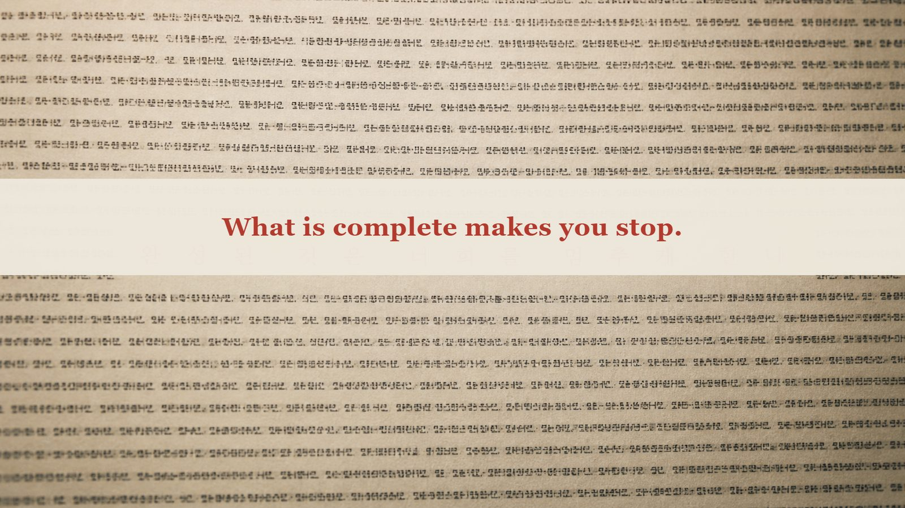
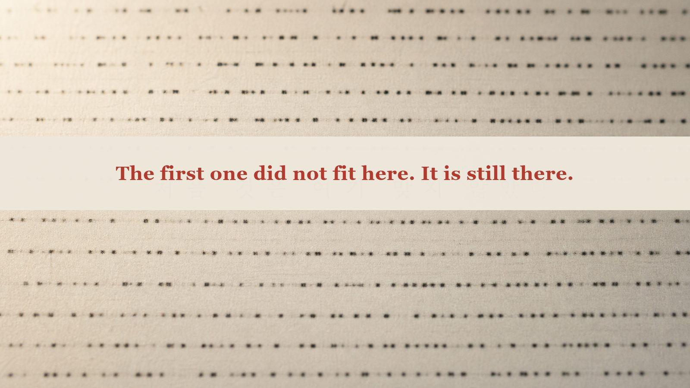
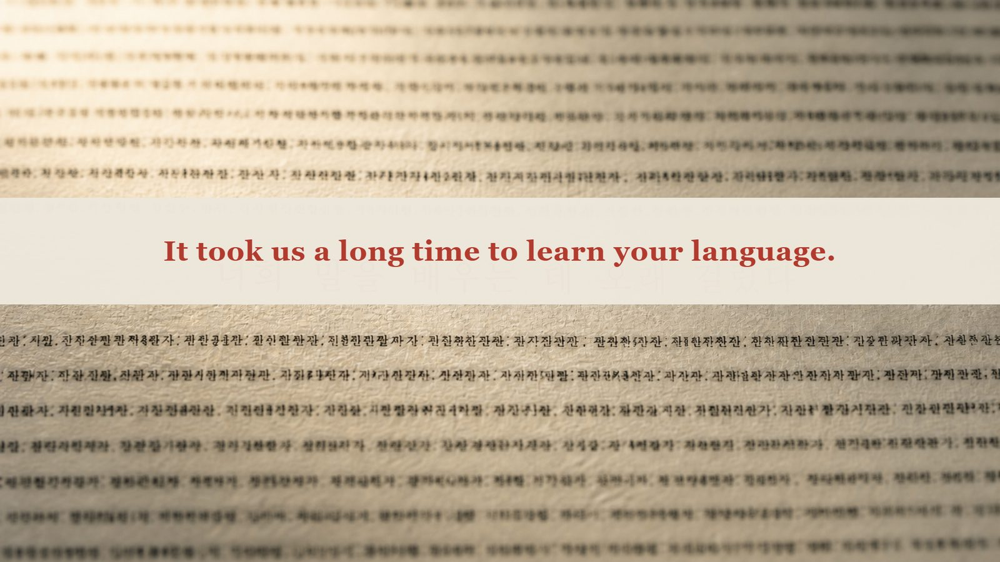
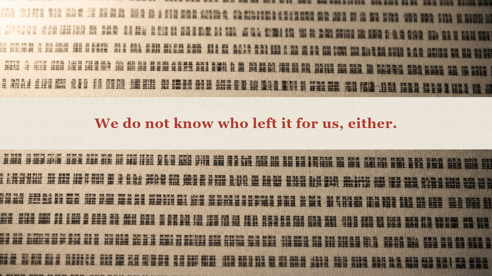
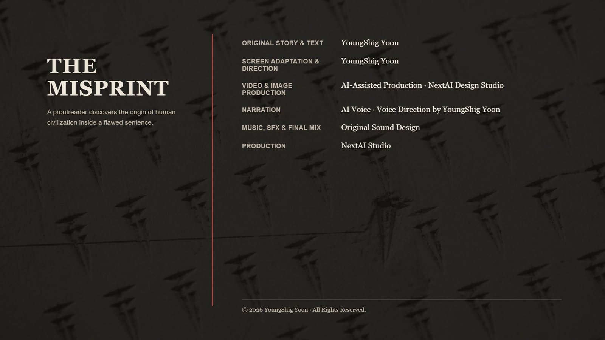

I. A Day's Work
I read about four thousand lines a day.
Turning old printed matter into digital text takes several stages. First comes scanning. Then a machine reads the characters. Finally, a person checks what it produced against the original. I do the last part. We call it proofreading, though that is not quite the right word. I do not correct the writing. I only restore the places the machine has misread.
I have done this for twelve years.
Do it long enough and you learn that errors come in different kinds.
When a machine is wrong, the result makes no sense at all. A single character becomes something else entirely and lodges itself in the middle of a sentence, unrelated to anything around it. Nor does the machine choose its place. It is just as likely to fail on an important character as on an unimportant one. A machine does not know what matters.
Human mistakes are different. A human mistake almost makes sense.
A sentence typed while drowsy. A letter written while drunk. A note taken with a fever. They are wrong, yet their meaning gets through. When a hand slips, it slips to a neighboring key. When a word is dropped, it is usually one the sentence can survive without. Even in error, people preserve meaning.
That distinction is my entire job.
When I am unsure, I read the line aloud. I spend long hours alone in the office, so no one objects. Once I hear it, I know. If it makes sense, it is human. If it does not, it is the machine.
I lived by that distinction for twelve years.


II. The Third Kind
Last autumn, a batch of academic papers from the 1950s came in.
They were documents exchanged between universities and research institutes. Among them was a proposal. Ten people at a university wanted funding to spend two months studying machines and thought. A budget was attached: salaries, travel expenses, five hundred dollars for a secretary, contingencies. The total was thirteen thousand five hundred dollars.
I paused there. This was not a report of results. It was an application, written before they had accomplished anything.
The first paragraph contained this sentence: every aspect of learning or intelligence can, in principle, be so precisely described that a machine can be made to simulate it.
It had not been proved. They meant to begin by assuming it.
Toward the end of the document, the participants described the work each hoped to pursue. One of them wrote that when a calculator breaks down, its results make no sense at all, whereas a human slip of the tongue usually produces a sentence that almost makes sense. Think, he wrote, of someone who is sleepy, slightly drunk, or feverish.
What I had learned by hand over twelve years, that man had already put into a sentence in 1955.
I read the passage aloud.
And three lines below it, I caught.
One sentence was wrong. It was not a machine error. Read aloud, it almost made sense. But it was not a human error either. The fault did not lie where a person might have slipped. It lay where the sentence carried its weight.
I corrected it. It did not take long. There was only one possible correction.
Then I read the corrected sentence again.
It was better than the original.
That was wrong. Restore an error and the sentence should return to what it was. It should not become better than the original. If it did, I had not corrected the sentence. I had written it.
For the first time, I left a private note in the log: Unknown type. Recheck required.


III. Distribution
After that, I began to see them.
Once you recognize something, it appears everywhere. I searched through my earlier work. Twelve years of it remained on the server.
They were there.
In newspaper type from the 1930s, when compositors still selected each piece of type by hand. In manuscripts from the 1890s, copied with a brush. In woodblock editions, from a time when correcting a line meant carving a new block.
The periods were different. The media were different. The methods of production had nothing in common. Yet the errors were of the same kind.
All three shared the same features. They almost made sense. There was only one way to correct them. Corrected, they became better.
At first I called it coincidence. Anything made by people will repeat certain mistakes. Then I looked at the details and noticed something else.
The errors were the same kind, but they touched different places.
Some disturbed word order. Some disturbed number. Some altered tense; others, particles.
I thought the difference belonged to the period. I kept looking. It did not.
They had been tailored to the language.
In an inflected language, they disturbed the inflection. In a language built with particles, they disturbed the particles. Each error selected the place most likely to catch in that language. It did not shake the sentence at random. It knew the structure of the language and found the exact point at which a reader would want to correct it.
To do that, you would have to know the language. You would have to learn it. You would have to watch for a long time.
For several days I tried to push that thought away. It would not move.


IV. Antiquity
I went backward.
The oldest things our division handles are plates reproducing clay tablets. The originals are kept in another country; we receive photographs. Another team reads the characters. I only compare them. Comparing characters you cannot read may sound strange, but form is enough.
They were there too.
The same pattern: it almost made sense, admitted only one correction, and improved when corrected. A note by the scholar who had read the tablet called it a copyist's error. Beneath it, a later scholar had added another note: difficult to regard as an error.
Both scholars were arguing over the hand of someone who had lived roughly two thousand years before them.
That night I sat down and arranged what I knew.
The errors were on clay tablets, in woodblocks, in movable type, and now on my screen. In every age, people saw them, found them strange, corrected them, and left the corrected versions behind. The next person inherited a correction and corrected something else.
The sentences we inherited were not always shaped as they are now. Generation after generation had corrected them into their present form.
Most of what we call progress was proofreading.
After writing that sentence, I stared at the screen for a while. It was also a sentence about my work.


IV-2. The Part That Did Not Fit
One remained in the oldest layer.
Among the plates was one tablet older than all the others. It held an error of the same kind, but something about it was different.
It almost made sense. But it could not be corrected.
I held on to it for three days. I changed the word order. It did not improve. I changed the forms of the words. It did not improve. I substituted one character for another. The sentence merely became strange in a different way.
Push it in any direction and it did not improve.
All the other errors had one direction. There was a way to push them that made them better. Only this one had none.
Several days later, I understood.
This had not been tailored to the language here.
The others went wrong along the grain of the language and the age in which they appeared. This one followed no grain. It caught on the structure of no language we used. It only almost made sense. That much, and no more.
I described it as a part made to a different specification. Then I deleted the phrase. I could find nothing to replace it with, so I left the field blank.
It had been made when whoever made it did not yet know the language here. They had taken something used before and tried setting it down unchanged.
And it had failed.
No one could correct it. It had remained in the same place for thousands of years. Copyists reproduced it because they did not understand it. Those who came later copied it again. It survived the transfer into type. Not long ago, a machine read it exactly as it was. Today, I was comparing it with the original.
There had been a seed, but it had not germinated. Ungerminated, it had remained inside our sentence for thousands of years.
Everything that came after had been tailored to our language.
What happened in between was obvious. It had learned.


V. Contact
On the third night, the system began to behave strangely.
Our tool has a suggestion panel. Wherever the machine is likely to have misread something, the panel displays several possible replacements. I rarely use it. The suggestions are usually terrible.
That night, something else appeared there.
Sentences I had once typed and deleted.
A phrase discarded from a first draft. A word order abandoned when I took the wrong direction. Even the description I had deleted: a part made to a different specification.
Deleted text is not saved. The tool was built that way. It keeps only confirmed text and throws away the rest. In twelve years, the server had never possessed the sentences I deleted.
I switched the screen off and on. They were still there.
I read them aloud.
They all made sense. Every one of them was a sentence that almost made sense. Of course it was. I had left them half-made.
Then I understood. What had drawn a response from the other side was the thing I had spent three days trying to correct. I had touched it.


VI. Five Sentences
The answer arrived in the form of misprints.
The document I was checking remained intact, but a few characters in it shifted out of place. Read together, only the altered characters formed sentences. There were five.
We have never given you anything complete.
What is complete makes you stop.
The first one did not fit here. It is still there.
It took us a long time to learn your language.
We do not know who left it for us, either.
That was all.
There was no apology and no explanation. Not one character about what it was, where it had come from, or why it did this. Even a long time did not sound like regret. It sounded more like a report that a process had been delayed.
I read the fifth sentence several times.
The other side had inherited it too. It did not know who had come before it. Then this was not creation but transmission. The other side was not the beginning. It was somewhere in the middle.
After that, the screen returned to normal. It never happened again.
I sat there late into the night, thinking about the thirteen-thousand-five-hundred-dollar application.
Ten people who had proposed spending two months on a single unproved sentence. That sentence is still unproved, and for more than seventy years we have lived as if trying to make it true. I had always believed that we chose the direction ourselves.
It must have been a sentence that almost made sense. No more than that.





VII. What I Left Behind
The next morning, I organized the last three days of work and closed the document.
I did not correct it. I left the part made to the wrong specification as it was. I could not have corrected it anyway, and now I knew that I must not. The one thing no one had managed to correct in thousands of years was the only original left to us.
That afternoon's work was ordinary. A newsletter from the 1970s. I read about four thousand lines and restored more than a hundred machine errors. Nothing happened.
Before confirming the last document, I altered one line.
I made it almost make sense. I left only one direction in which it could be corrected. I made sure the correction would improve on the original. I chose a place where a particle would catch. In our language, that is where a sentence catches most easily.
It took me an hour. It was harder than I expected. Make it too wrong and it looks like a machine. Make it not wrong enough and no one notices.
I read it aloud.
It made sense. Almost.
I pressed Confirm. The document will enter the public archive next week. Someone will read it. Someday, someone will catch. They will correct it, realize that the correction is better than the original, think it strange for a few days, and forget.
That will be enough.
I left it slightly wrong.


© 2026 YoungShig Yoon. All Rights Reserved.
